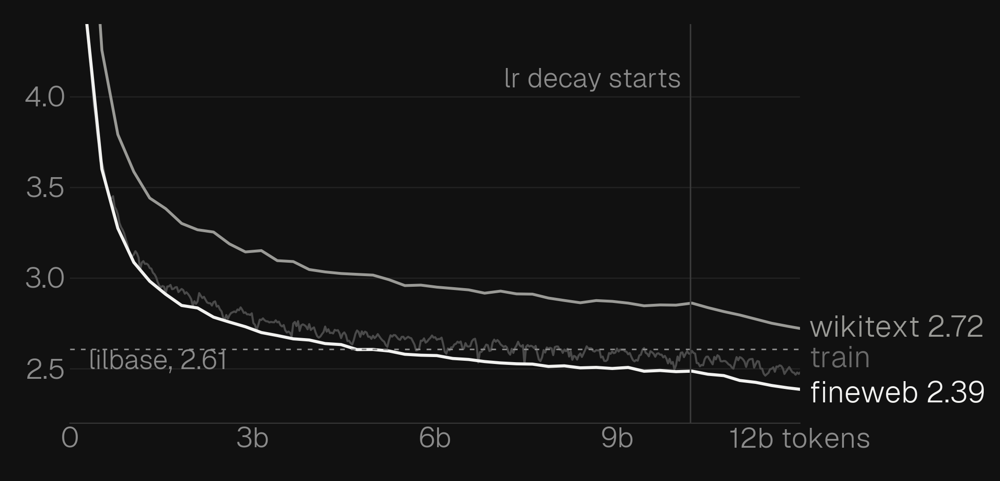
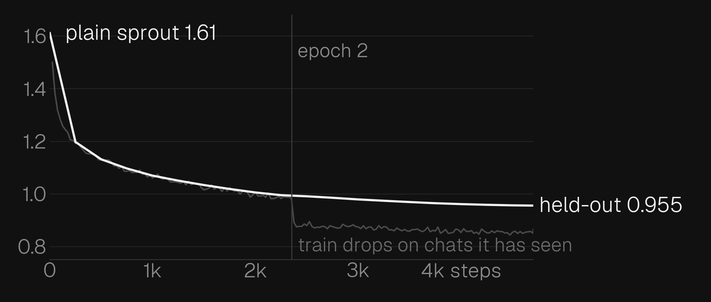

sprout finished pretraining on sep 27. 523m params, 12 billion tokens from fineweb-edu, dclm, cosmopedia and project gutenberg, all on the free kaggle tpu over 4 sessions. this time i actually saved the loss history so theres a real loss curve.

it ended at 2.39 on held-out fineweb-edu. lilbase finished at 2.61 on the same text, and sprout passed that at about 4.7b tokens. the little drop at the end is where the learning rate starts decaying.
the finetune
same idea as lilchat: train it on smol-smoltalk conversations with the loss only on the assistant replies. lilchat was done overnight on my macbook and only got through 12% of the data. this one ran on the tpu, so it went through the whole dataset twice, 616m tokens in about 90 minutes lol

loss on chats it hadnt seen went from 1.61 to 0.955. when epoch 2 starts the train loss drops straight away because its seen those exact chats before, but the held-out loss kept going down slowly so it wasnt just memorising them.
what works
i gave it the same prompts i gave lilchat.
| prompt | lilchat | sprout |
|---|---|---|
| hi | Hello! How can I help you today? | same |
| capital of australia | melbourne, then perth | canberra |
| 17 + 25 | 48 | 42, then 31 on another try |
| reverse a string | right code, wrong explanation | right code, right explanation |
| haiku about a cat that hates mondays | 20 lines that loop forever | 4 lines, then it stops |
it knows a lot more stuff than lilchat. it got canberra every time i asked, and for the string one it wrote s[::-1] and actually explained the slice properly.
what doesnt
maths is still a coin flip. the haiku stops now but its still not a haiku, it has no idea what 5-7-5 is. if you ask who it is it says its an ai assistant for creative writing, every time, which is just what a lot of smol-smoltalk looks like. and it still makes stuff up with total confidence, 523m params was never gonna know everything.
ollama run navthings/sprout
or try it in your browser, its 345mb. the weights and ggufs are on hugging face.
next
put it through the same benchmark script as lilbase, against gpt-2 large and xl this time. then use sprout as the base for a coding model.